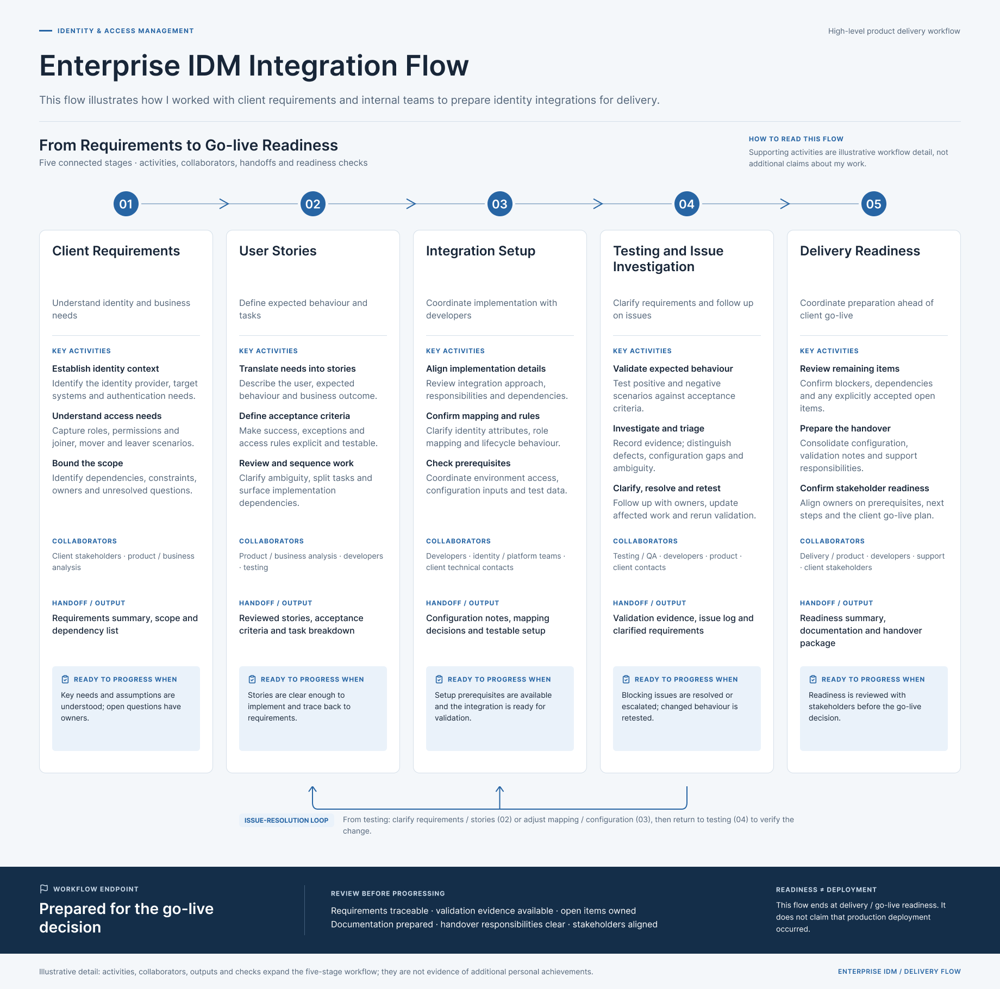
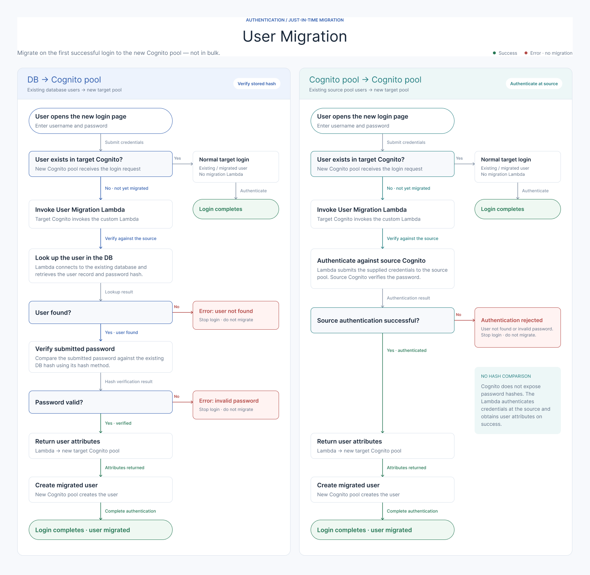

Case Study 03 · Identity & Integrations
Delivering Enterprise Identity Integrations with Amazon Cognito
I translated enterprise identity requirements into actionable user stories, coordinated IDM integration delivery, and implemented an AWS Lambda function for a planned identity migration initiative. This work combined product delivery responsibilities with hands-on technical implementation.
01. Project Overview
Enterprise clients required identity management integrations to support authentication and user access within a hospitality platform. My responsibilities included understanding client requirements, translating them into development tasks, coordinating integration setup, and supporting delivery readiness.
A related initiative focused on identity migration: moving database-backed user identities to Amazon Cognito and migrating identities between Cognito environments. I personally implemented an AWS Lambda function for the planned migration solution.
02. Enterprise IDM Integration Flow
This flow illustrates how I worked with client requirements and internal teams to prepare identity integrations for delivery.

03. The Challenge
- Translate enterprise identity requirements into clear implementation tasks.
- Coordinate product, development, and testing work so integrations were prepared for client use.
- Address client-specific business rules in the planned identity migration solution.
- Implement a migration component while keeping development status separate from the broader rollout plan.
04. User Migration Architecture
The identity migration initiative covered two scenarios: migrating users from existing database-backed records to Amazon Cognito, and migrating users between Cognito environments. I implemented an AWS Lambda function to support the planned migration solution.

Scenario A: Database to Cognito
The planned scenario involved moving user identities from existing database-backed records to Amazon Cognito, with client-specific business rules handled by the migration solution.
Scenario B: Cognito to Cognito
The second scenario involved moving identities from a source Cognito environment to a target Cognito environment as part of a planned migration initiative.
My contribution
- Worked through business requirements for the planned identity migration scenarios.
- Personally implemented an AWS Lambda function for the migration solution.
- Incorporated required client-specific business rules into the component.
- Connected expected business behaviour with the technical implementation.
Exact triggers, APIs, password handling, and validation mechanisms are not specified here because this portfolio does not document those implementation details.
05. Implementation Status and Scope
The AWS Lambda function was implemented during my tenure. The broader initiative was intended to support migration of a large user population, with a target of more than 50,000 users.
The planned large-scale migration was not executed before I left the company. The target population is a description of the initiative's intended scale, not the number of users migrated.
Implementing a migration component and completing a production-scale identity migration are separate delivery milestones.
06. My Role and Contributions
Requirements and Product Delivery
- Worked with enterprise clients to understand identity integration requirements.
- Translated requirements into user stories and actionable development tasks.
- Clarified expected business behaviour with technical teams.
- Supported delivery readiness ahead of go-live.
Engineering Coordination
- Coordinated integration setup with developers.
- Helped investigate issues during implementation and testing.
- Followed up on integration questions and delivery dependencies.
- Supported communication between business requirements and technical implementation.
Hands-on AWS Lambda Implementation
- Personally implemented a Lambda function for the identity migration initiative.
- Worked on the database-to-Cognito and Cognito-to-Cognito migration scenarios.
- Incorporated the required client-specific business rules.
Delivery Scope and Readiness
- Supported integration testing and issue investigation.
- Helped prepare enterprise integrations for client use.
- Kept the implemented Lambda component distinct from the uncompleted large-scale migration rollout.
07. My Delivery Approach
- Understand: Clarify business requirements, client-specific needs, and identity integration expectations.
- Translate: Convert requirements into user stories and implementation expectations.
- Coordinate: Work with developers and testing teams to address questions and dependencies.
- Implement and investigate: Contribute hands-on to the Lambda migration component and support technical issue investigation.
- Prepare for delivery: Support integration readiness while accurately communicating what was implemented and what remained planned.
08. Outcomes and Contributions
No claim is made that the planned large-scale user migration was completed or that the target population was migrated during my tenure.
09. Key Learnings
- Identity integrations depend on clear requirements and coordination across technical teams.
- User stories should make expected business behaviour understandable to developers and testers.
- Technical implementation and production rollout are separate delivery milestones.
- Product delivery benefits from enough technical understanding to clarify requirements and investigate issues.
10. Skills Demonstrated
Confidentiality note: This case study describes the work at a high level. Customer identities, internal implementation details, identity data, credentials, and proprietary configurations have been omitted. The diagrams are conceptual illustrations and are not representations of a production architecture.